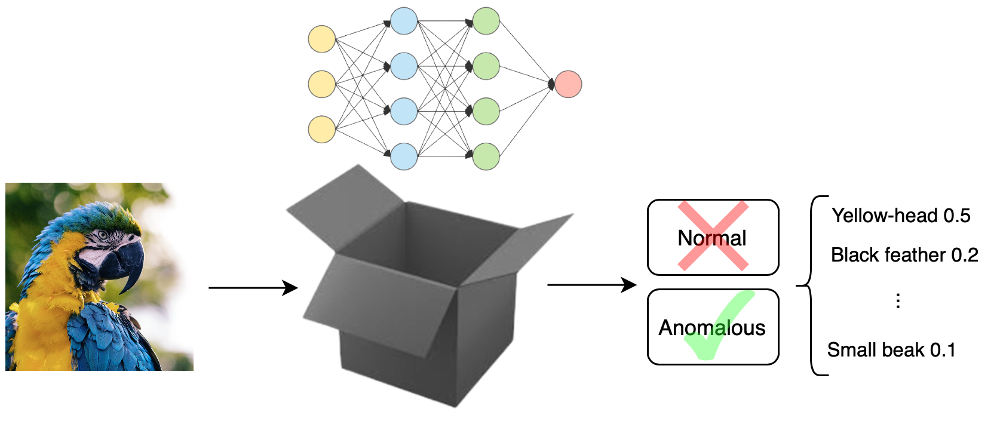
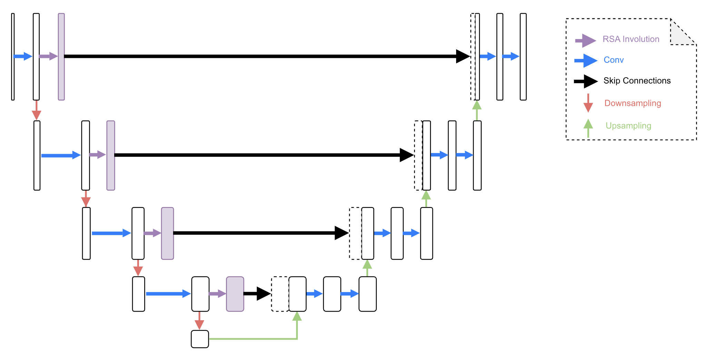
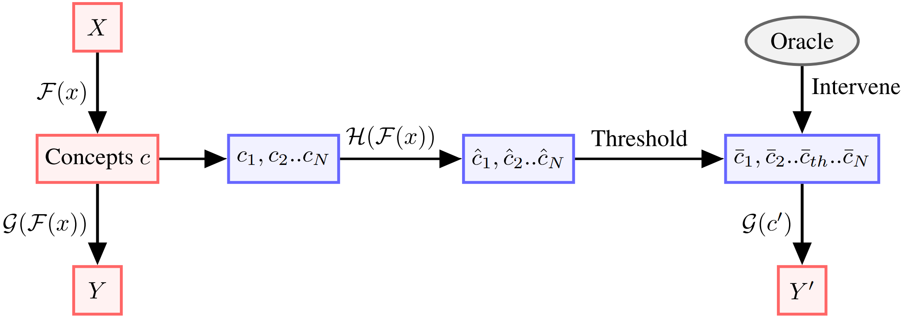

|
Ivaxi Sheth

I am a PhD student at CISPA Helmholtz Center under the supervision of Prof. Mario Fritz. My research focuses on the dual use of Large Language Models (LLMs), covering the following key areas:
-
LLMs for Scientific Discovery
I am exploring how LLMs can assist in accelerating scientific discovery, particularly in hypothesis generation and causal reasoning.
See this and this.
-
LLMs Safety, Control and Interpretability
My research also investigates how LLMs can be made more trustworthy by focusing on safety, representation control, improving interpretability for practical applications, ethics and biases.
See this, this, and this.
-
Human-AI Interaction
I am also interested in ensuring effective human oversight over models, particularly necessary for scientific discovery and decision-making processes. This is key to maintaining human autonomy, as LLMs become more embedded in research and applications.
See this and this.
I graduated with BEng + MEng Hons in Electrical and Electronic Engineering from Imperial College London. My areas of focus were Machine Learning and Computer Vision supervised by Dr. Carlo Ciliberto. Previously I was a research assistant at Mila-Quebec AI. I also worked as an AI Research Engineer at Imagination Technologies, UK under Dr. Cagatay Dikici working on the Hardware Acceleration of neural networks.
Outside of research, I love dancing and hold a diploma in Kathak. I actively mentor and perform Kathak, having performed across multiple cities in six countries.
If you are working on a similar topic or are interested in collaborating, I would love to hear from you!
Email /
Google Scholar /
Twitter /
Linkedin
|
|
|
News (not always updated)
|
Publications

|
Hypothesizing Missing Causal Variables
Ivaxi Sheth,
Sahar Abdelnabi,
Mario Fritz.
Preprint & CALM Neurips'24 Workshop
[
Paper, Code
]
Can LLMs fill in the gaps of scientific discovery? This work challenges Large Language Models to complete partial causal graphs, revealing their surprising strengths—and limitations—in hypothesizing missing variables.
|

|
CausalGraph2LLM: Evaluating LLMs for Causal Queries
Ivaxi Sheth,
Bahare Fatemi,
Mario Fritz.
Preprint & CALM Neurips'24 Workshop
[
Paper, Code
]
This paper introduces CausalGraph2LLM, the first comprehensive benchmark to evaluate Large Language Models' ability to understand and reason with causal graphs, revealing their sensitivity to encoding and potential biases in downstream tasks.
|

|
LLM4GRN: Discovering Causal Gene Regulatory Networks with LLMs -- Evaluation through Synthetic Data Generation
Tejumade Afonja*,
Ivaxi Sheth*,
Ruta Binkyte*,
Waqar Hanif, Thomas Ulas, Matthias Becker,
Mario Fritz.
Preprint
[
Paper, Code
]
This paper explores the use of large language models (LLMs) for discovering gene regulatory networks (GRNs) from single-cell RNA sequencing data, demonstrating their effectiveness in guiding causal data generation and enhancing statistical modeling in biological research. |

|
LLM Task Interference: An Initial Study on the Impact of Task-Switch in Conversational History
Akash Gupta*,
Ivaxi Sheth*,
Vyas Raina*,
Mark Gales,
Mario Fritz.
EMNLP Main 2024
ICML Foundation Models in Wild Workshop 2024
[
Paper, Code
]
Large Language Models (LLMs) can perform a wide range of tasks, but their performance can be negatively impacted when there's a switch in tasks. This study is the first to formalize the study of such vulnerabilities, revealing that both very large and small LLMs can be susceptible to performance degradation from task-switches.
|

|
Auxiliary Losses for Learning Generalizable Concept-based Models
Ivaxi Sheth,
Samira Ebrahimi Kahou
NeurIPS 2023
[
Paper, Code
]
We proposed a multi-task learning paradigm for Concept Bottleneck Models to introduce inductive bias in concept learning. Our proposed model coop-CBM improves the downstream task accuracy over black box standard models. Using the concept orthogonal loss, we introduce orthogonality among concepts in the training of CBMs.
|
|

|
Transparent Anomaly Detection via Concept-based Explanations
Laya Rafiee Sevyeri*
Ivaxi Sheth*,
Farhood Farahnak*
Samira Ebrahimi Kahou
Shirin Abbasinejad Enger
NeurIPS 2023, XAI in Action
[
Paper
]
We propose Transparent {A}nomaly Detection {C}oncept {E}xplanations (ACE). ACE is able to provide human interpretable explanations in the form of concepts along with anomaly prediction. Our proposed model shows either higher or comparable results to black-box uninterpretable models.
|
|
|
Survey on AI Ethics: A Socio-technical Perspective
Dave Mbiazi*, Meghana Bhange*, Maryam Babaei*, Ivaxi Sheth*, Patrik Joslin Kenfack*,
Preprint
[
Paper
]
This work unifies the current and future ethical concerns of deploying AI into society.
|
|

|
Relational UNet for Image Segmentation
Ivaxi Sheth*,
Pedro Braga*,
Shivakanth Sujit*,
Sahar Dastani,
Samira Ebrahimi Kahou
International Workshop on Machine Learning in Medical Imaging 2023
[
Paper , Code
]
We propose RelationalUNet which introduces relational feature transformation to the UNet architecture. RelationalUNet models the dynamics between visual and depth dimensions of a 3D medical image by introducing Relational Self-Attention blocks in skip connections. |
|

|
Learning from uncertain concepts via test time interventions
Ivaxi Sheth,
Aamer Abdul Rahman,
Laya Rafiee Sevyeri,
Mohammad Havaei
Samira Ebrahimi Kahou
NeurIPS 2022, Trustworthy and Socially Responsible Machine Learning Workshop
[
Paper
]
We propose uncertainty based strategy to select the interventions in Concept Bottleneck Models during inference.
|
FHIST: A Benchmark for Few-shot Classification of Histological Images
Fereshteh Shakeri,
Malik Boudiaf,
Sina Mohammadi,
Ivaxi Sheth,
Mohammad Havaei,
Ismail Ben Ayed
Samira Ebrahimi Kahou.
In submission
Our benchmark builds few-shot tasks and base-training data with various tissue types, different levels of domain shifts stemming from different cancer sites, and different class granularity levels, thereby reflecting realistic clinical settings. We evaluate the performances of state-of-the-art few-shot learning methods, initially designed for natural images, on our histology benchmark.
|
Three-stream network for enriched Action Recognition
Ivaxi Sheth,
CVPRW' 21
We propose three stream network with each stream working on a different frame rate of input for action recognition and detection. We test our work on popular datasets such as Kinetics, UCF-101 and AVA. The results on AVA dataset particularly shows that effectiveness of the use of attention for each stream.
|
Patents
Hardware implementation of windowed operations in three or more dimensions
Ivaxi Sheth,
Cagatay Dickici,
Aria Ahamdi,
James Imber.
In submission
|
|
| |